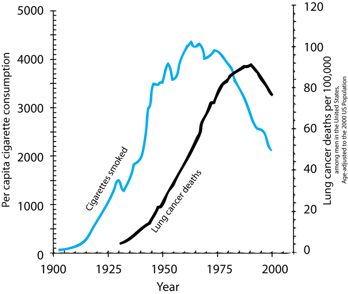
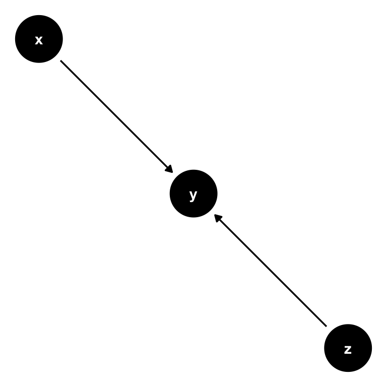
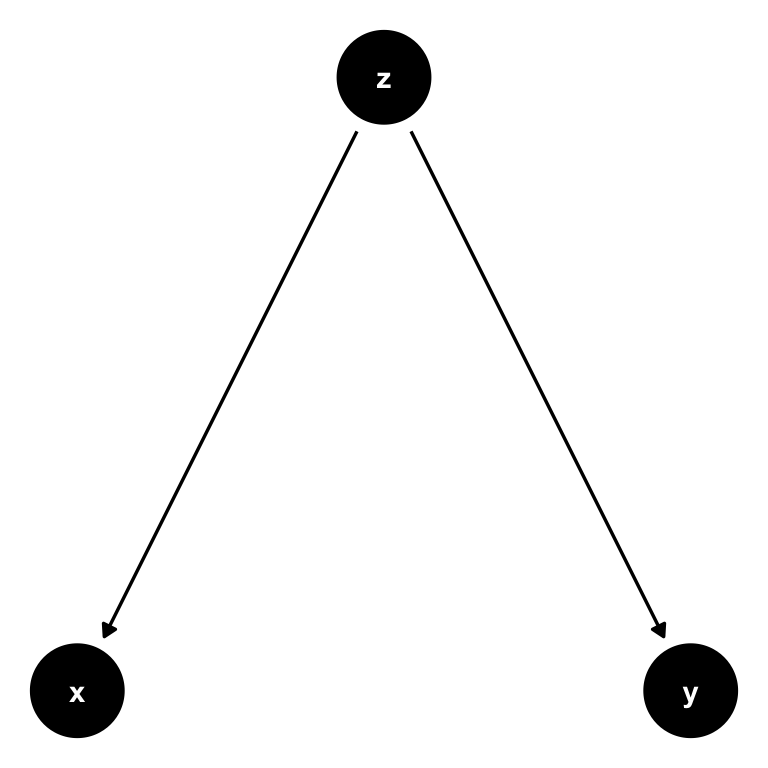
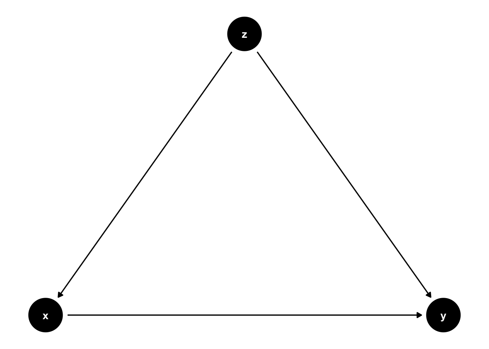
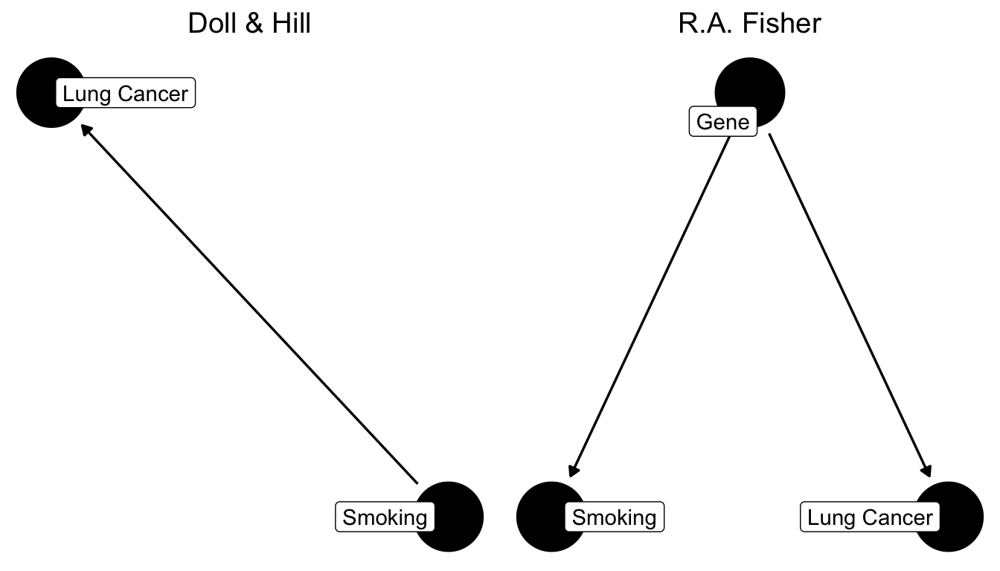
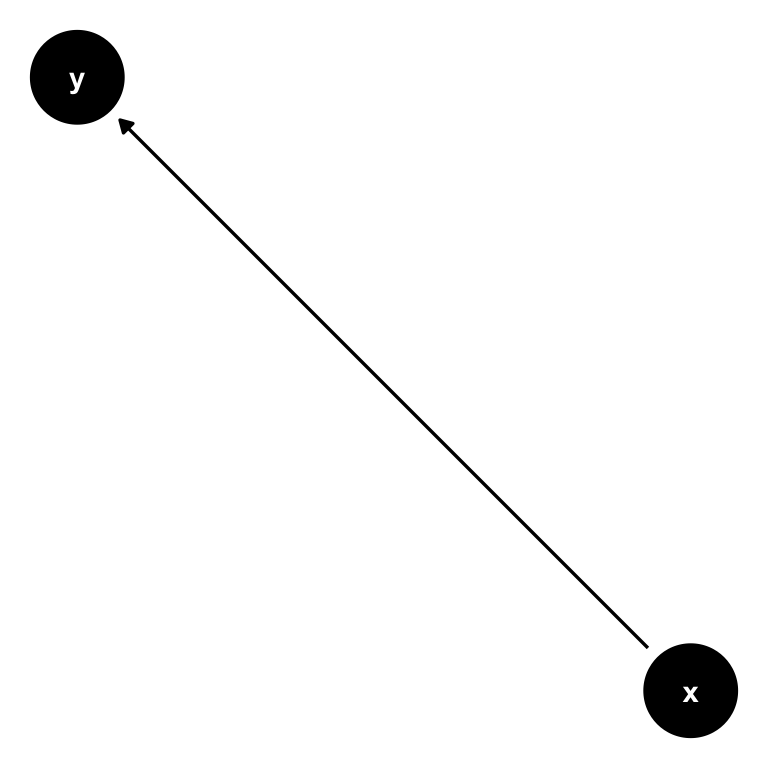
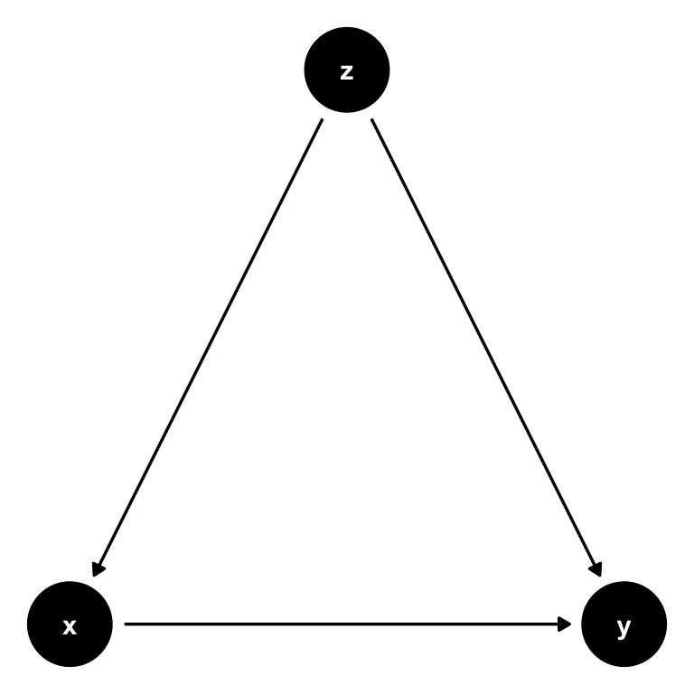
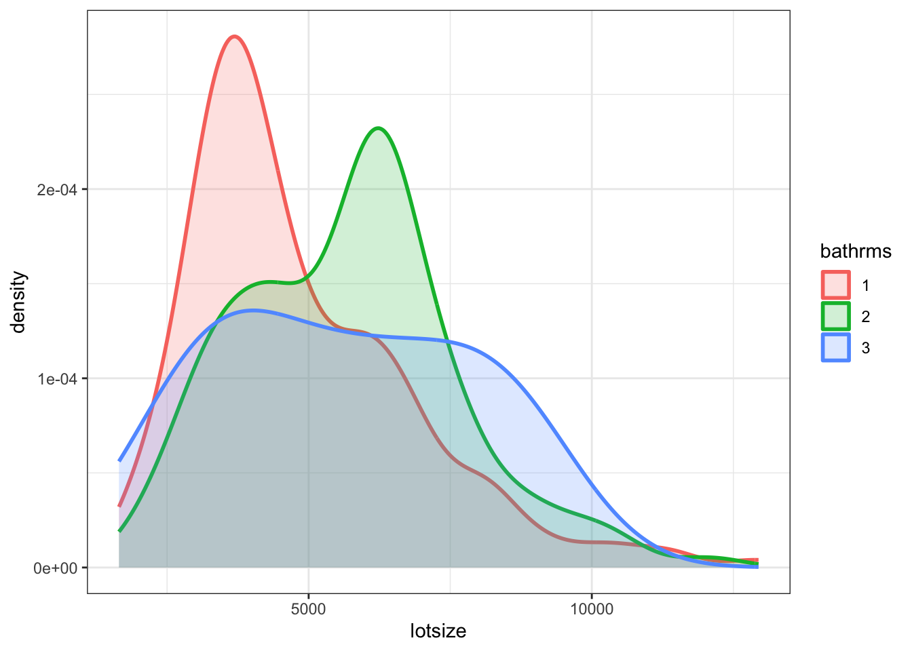

8 Causality
In this chapter we take on a challenging part of our course. Remember that in the first set of slides we introduced Econometrics as the economist’s toolkit to answer questions like does x cause y? Let’s illustrate the issues at stake with a question from epidemiologie and public health:
Warning
Does smoking cause lung cancer?
Just in case you were wondering: Yes it does! However, for a very long time the causal impact of smoking on lung cancer was hotly debated, and it’s instructive for us to look at this history.1
Let’s go back to the 1950’s. We are at the start of a big increase in deaths from lung cancer. At the same time cigarette consumption was growing very fast. With the benefit of hindsight, we can now draw this graph:
However, time series graphs are poor tools to make causal statements. Many other things had changed from 1900 to 1950, all of which could equally be responsible for the rise in cancer rates:
- Tarring of roads
- Inhalation of motor exhausts (leaded gasoline fumes)
- General greater air pollution.
We call those other factors confounders of the relationship between smoking and lung cancer.
So, there were a series of sceptics around who at the time were contesting the existing evidence. That evidence consisted in general of the following:
- Case-Control studies: British Epidemiologists Richard Doll and Austin Bradford Hill started to compare people already diagnosed with cancer to those without, recording their history, and observable characteristics (like age and health behaviours). In one study, out of 649 lung cancer patients interviewed, all but 2 had been smokers! In that study, a cancer patient was 1.5 million times more likely to be have been a smoker than a non-smoker. Still, critics said, there are several sources of bias:
- Hospital patients could be a selected sample of the general (smoking) population.
- Patients could suffer from recall bias, affecting their recollection of facts.
- So, while comparing cancer patients to non-patients and controlling for several important confounders (like age, income and other observable characteristics), there was still scope for bias.
- Moreoever, replicating those studies, as Doll and Hill attempted, would not have solved this issue.
- Next they attempted what doctors call a Dose-Response Effect study. In 1951 they sent out 60,000 questionnaires to British physicians asking about their smoking habits. Then they followed them over time:
- Only 5 years on, heavy smokers had a death rate from lung cancer that was 24 times higher than for nonsmokers.
- People who had smoked and then stopped reduced their risk by a factor of 2.
- Still, notorious sceptics like R.A. Fisher were unconvinced. The studies still failed to compare otherwise identical smokers to non-smokers. There were still important unobserved confounders out there which could invalidate the conclusion that we observed indeed a causal relationship.
Let’s put a some structure on this problem now, so we can make progress.
8.1 Directed Acyclical Graphs (DAG)
A DAG is a tool to visualize a causal relationship. It is a graph where nodes are connected via arrows, where an arrow can run in one direction only (hence, directed graph). If an arrow starts at node x and ends at node y, we say that x causes y. Here is a simple example of such a DAG:

Now consider this setting, where there is a third variable, z. It could be possible that also z has a direct influence on y:

Now let’s change this and create a path from z to both x and y instead. We call z a confounder in the relationship between x and y: z confounds the direct causal impact of x on y, by affecting them both at the same time. What is more, there is no arrow from x to y at all, so the only real explanatory variable here is in fact z. Attributing any explanatory power to x would be wrong in this setting.

Here is a second example where z is a confounder, but slightly different.

In Figure 8.5 there is an arrow from x to y. In this setting, if we are able to observe z, we can adjust the correlation we observe between x to y for the variation induced by z. In practice, this is precisely what multiple regression will do: holding z fixed at some value, what is the partial effect of x on y. Notice that z cedes to be a confounder in this situation, and interpreting our regression coefficient on x as causal is correct.
8.2 Smoking in a DAG
Let’s use this and cast our problem as a DAG now. What the scientists in the 1950s faced where two competing models of the relationship between smoking and lung cancer:

Basically, what critics like Fisher were claiming was that the existing studies did not compare like for like. In other words, our ceteris paribus assumption was not satisfied. They were worried that smoking was not the only relevant difference between a population of smokers and one of non-smokers. In particular, they worried that people self-selected into smoking, and that the choice to become a smoker may be influenced by other, unobserved, underlying forces - like genetic predisposition, for example. That could mean that smokers were also more likely to take risks, or more likely to be heavy drinkers, or engage in other behaviours that might be conducive to develop lung cancer. They did not formulate it in terms of genetics at the time, because they could not know until the 2000’s, when the human genome was sufficiently mapped to establish this fact (and indeed there is a smoking gene! But that’s beside the point), but they worried about this factor.
The argument was settled in the eyes of most physicians, when Jerome Cornfield in 1959 wrote a rebuttal of Fisher’s points. Cornfield’s strategy was to allow Fisher to have his unobserved factor, but to show that there was an upper bound to how important it could be in determining the outcome. Here goes:
- Suppose there is indeed a confounding factor “smoking gene”, and that it completely determines the risk of cancer in smokers.
- Suppose smokers are observed to have 9 times the risk of non-smokers to develop lung cancer.
- The smoking gene needs to be at least 9 times more prevalent in smokers than in non-smokers to explain this difference in risk.
But now consider what this implies. Let’s suppose that around 11% of all non-smokers have the smoking gene. That means that 9\times 11 = 99\% of smokers need to have it! What’s even more worrying, if only even 12% of non smokers have the gene, then the argument breaks down because it would require 9\times 12 = 108\% of smokers to have it, which is of course impossible.
This argument was so important that it got a name: Cornfield’s inequality. It left of Fisher’s argument nothing but a pile of rubble. It’s impossible to think that genetic variation alone could be so important in determining a complex choice of becoming a smoker or not. Looking back at the right panel of Figure 8.6, the link from smoking to lung cancer was much too strong to be explained by the genetic hypothesis alone.
8.3 Randomized Control Trials (RCT) Primer
We now present a quick introduction to Randomized Control Trials (RCTs). The history of randomization is fascinating and goes back a long time, again involving R.A. Fisher from above.2 Suffice it to say that RCTs have become so important in Economics that the Nobel Price in Economics 2019 has been awarded to three exponents of the RCT literature, Duflo, Banerje and Kremer. RCTs are widely used in Medicine, where they originate from (in some sense). But, what are RCTs?
Note
A randomized controlled trial is a type of scientific experiment that aims to reduce certain sources of bias when testing the effectiveness of some intervention (treatment or policy); this is accomplished by randomly allocating subjects to two or more groups, treating them differently, and then comparing them with respect to a measured response.
That sounds really intuitive. If we randomly allocate people to receive treatment, there can be no concern of unobserved confounders, as we have relieved the subjects of making the choice to get treated. Remember the cigarette smokers above: The concern was that an unobserved genetic predisposition correlated with both choosing to become a smoker but also with other potentially cancer-inducing behaviours like drinking or risk taking. Imagine for a moment that we could randomly select people at some young age to be selected for treatment (smoking for 30 years, say). The genetic predisposition will be equally prevalent in both treatment and control group. However, only the treatment group is allowed (and indeed forced) to smoke. Observing higher cancer rates in the treatment group would provide causal evidence for the effect of smoking on lung cancer.
Thankfully, such an experiment is impossible to run on ethical grounds. We could never subject individuals to such severe and prolongued health risks for the sake of a research study. That’s why the question took to long to be settled!
Let’s introduce a formal framework now to think more about RCTs.
8.4 The Potential Outcomes Model
The Potential Outcomes Model, often named after one of it’s inventors the Rubin Causal Model, posits that there are two states of the world - the potential outcomes. A first state, where a certain intervention is administered to an individual, and a second state, where this is not the case. Formally, this idea is expressed with superscripts 0 and 1, like this:
- Y_i^1: individual i has been treated
- Y_i^0: individual i has not been treated
Denoting with D_i \in \{0,1\} the treatment indicator which is one if i is indeed treated, the observed outcome Y_i is then
Y_i = D_i Y_i^1 + (1-D_i)Y_i^0 \tag{8.1}
This simple equation is able to formalize a rather deep question. We only ever observe one outcome of events for a given individual i, say Y_i = Y_i^1 in case treatment was given. The deep question is: what would have happened to i, had they not received treatment? You will realize that this a very natural question for us humans to put to ourselves, and to subsequently answer:
- How long would the trip have taken, had I chosen another metro line?
- What would have happened, had I chosen to study a different subject?
- What would have happend, had Neo taken the blue pill instead?
Our ability to make those considerations distinguishes us from animals. It’s one of the biggest challenges for machines when trying to be intelligent.
What makes this question so hard to answer for machines and animals alike is the fact that one has to imagine a parallel universe where the actions taken were different, without having observed that precise situation before. Neo did not take the blue pill, and whatever happened after that originated from this decision - so how are we to tell what would have happened? It’s easy for us and still hard for machines.
Potential outcome Y_i^0 above is what is known as the counterfactual outcome. What would have happened to subject i, had they not received treatment D?
Following Rubin, let us define the treatment effect for individual i as follows:
\delta_i = Y_i^1 - Y_i^0 \tag{8.2}
Notice our insistence about talking about a single individual i throughout here. Keeping the potential outcome model Equation 9.1 in mind, i.e. the fact that we only observe one of both outcomes, we face the fundamental identification problem of program evaluation:
Warning
Given we only observe one potential outcome, we cannot compute the treatment effect \delta_i for any individual i.
That’s pretty dire news. Let’s see if we can do better with an average effect instead. Let’s define three average effects of interest:
- the Average Treatment Effect (ATE): \delta^{ATE} = E[\delta_i] = E[Y_i^1] - E[Y_i^0]
- the Average Treatment on the Treated (ATT): \delta^{ATT} = E[\delta_i|D_i = 1] = E[Y_i^1|D_i = 1] - E[Y_i^0|D_i = 1]
- the Average Treatment on the Untreated (ATU): \delta^{ATU} = E[\delta_i|D_i = 0] = E[Y_i^1|D_i = 0] - E[Y_i^0|D_i = 0]
Notice that none of those can be computed from data either, because all of them require data on individual i from both scenarios. Let’s focus on the ATE for now. Fundamentally we face a missing data problem: either Y_i^1 or Y_i^0 are missing from our dataset. Nevertheless, let’s setup the following naive simple difference in means estimator \hat{\delta}:
\begin{aligned} \hat{\delta} =& E[Y_i^1|D_i = 1] - E[Y_i^0|D_i = 0]\\ =& \frac{1}{N_T} \sum_{i \in T}^{N_T} T_i - \frac{1}{N_C} \sum_{j \in T}^{N_C} Y_j \end{aligned} \tag{8.3}
in other words, we just difference the mean outcomes in both treatment (T) and control (C) groups. That is, N_C is the number of people in the control group, N_T is the same for treatment group.
Now let’s consider what randomly choosing people for treatment does. The key consideration here is that the true \delta_i is potentially different for each person. That is, some people will have a high effect of treatment, while others may have a small (or even negative!) effect. To learn about the true \delta^{ATE} from our naive \hat{\delta}, it matters who ends up being treated!
Imagine that individuals have at least some partial knowledge about their likely gains from treatment, i.e. their personal \delta_i. If those who expect to benefit a lot will select disproportionately into treatment, then our estimator \hat{\delta} will be biased upwards for the true average effect \delta^{ATE}. This is so because the average of observed outcomes in the treatment group, i.e.
\frac{1}{N_T} \sum_{i \in T}^{N_T} Y_i
will be too high. It represents the disproportionately high treatment outcome Y_i^1 for all those who anticipated such a high outcome from treatment, and who therefore were particularly eager to get selected into treatment. It’s not representative of the true population wide treatment outcome E[Y_i^1].
Here is where randomization comes into play. Suppose we now flip a coin for each person to determine whether they obtain treatment or not. This takes away from them the possibility to select on expected gains into treatment. Crucially, the distribution of effects \delta_i is still the same in the study population, i.e. there are still people with high and people with low effects. But we have solved the missing data problem mentioned above, because whether Y_i^1 or rather Y_i^0 is observed for each i is now random, and no longer a function of any other factor that i could act upon! Hooray!
Notice how this links back to our initial discussion about DAGs above. Randomisation essentially cancels the links starting at confounder z in Figure 8.5.
8.5 Omitted Variable Bias and DAGs
We want to revisit the underlying assumptions of the classical regression model outlined in the chapter on standard errors, which is closely related to the previous discussion. One of those assumptions said this:
Warning
The mean of the residuals conditional on x should be zero, E[\varepsilon|x] = 0. This means that Cov(\varepsilon,x) = 0, i.e. that the errors and our explanatory variable(s) should be uncorrelated. We want x to be strictly exogenous to the model.
Let us start again with
y_i = \beta_0 + \beta_1 x_i + \varepsilon_i \tag{8.4}
and imagine it represents the data generating process (DGP) of the impact of x on y. Writing down this equation is tightly linked to drawing this DAG from above:

The role of \varepsilon_i in equation Equation 8.4 is to allow for random variability in the data not captured by our model, almost as an acknowledgement that we would never be able to fully explain y_i with our necessarily simple model. However, assumption E[\varepsilon|x] = 0 (or Cov(\varepsilon,x) = 0) makes sure that those other factors are in no systematic relationship with our regressor x. Why? Well if it were the case that another factor z is related to x, we could never make our ceteris paribus statements of holding all other factors fixed, the impact of x on y is \beta. In other words, we’d have a confounder in our regression.

Notice, again, that the key here is that if we don’t control for z, it will form part of the error term \varepsilon. Given the causal link from z to x, we will then observe that Cov(x,u) = Cov(x,\varepsilon + z) \neq 0, invalidating our assumption.
8.5.1 House Prices and Bathrooms
Let’s imagine that equation Equation 8.4 represents the impact of number of bathrooms (x) on the sales price of houses (y). We run OLS as
y_i = b_0 + b_1 x_i + e_i
and find a positive impact of bathrooms on houses:
data(Housing, package="Ecdat")
hlm = lm(price ~ bathrms, data = Housing)
summary(hlm)
Call:
lm(formula = price ~ bathrms, data = Housing)
Residuals:
Min 1Q Median 3Q Max
-77225 -15271 -2510 11704 102729
Coefficients:
Estimate Std. Error t value Pr(>|t|)
(Intercept) 32794 2694 12.17 <2e-16 ***
bathrms 27477 1952 14.08 <2e-16 ***
---
Signif. codes: 0 '***' 0.001 '**' 0.01 '*' 0.05 '.' 0.1 ' ' 1
Residual standard error: 22880 on 544 degrees of freedom
Multiple R-squared: 0.267, Adjusted R-squared: 0.2657
F-statistic: 198.2 on 1 and 544 DF, p-value: < 2.2e-16In fact, from this you conclude that each additional bathroom increases the sales price of a house by 27477 dollars. Let’s see if our assumption E[\varepsilon|x] = 0 is satisfied:
library(dplyr)
# add residuals to the data
Housing$resid <- resid(hlm)
Housing %>%
group_by(bathrms) %>%
summarise(mean_of_resid=mean(resid))# A tibble: 4 × 2
bathrms mean_of_resid
<dbl> <dbl>
1 1 -118.
2 2 955.
3 3 -11195.
4 4 32298.Oh, that doesn’t look good. Even though the unconditional mean E[e] = 0 is very close to zero (type mean(resid(hlm))!), this doesn’t seem to hold at all by categories of x. This indicates that there is something in the error term e which is correlated with bathrms. Going back to our discussion about ceteris paribus in the chapter on multiple regression, we stated that the interpretation of our OLS slope estimate is that
Tip
Keeping everything else fixed at the current value, what is the impact of x on y? Everything also includes things in \varepsilon (and, hence, e)!
It looks like our DGP in Equation 8.4 is the wrong model. Suppose instead, that in reality sales prices are generated like this:
y_i = \beta_0 + \beta_1 x_i + \beta_2 z_i + \varepsilon_i \tag{8.5}
This would now mean that by running our regression, informed by the wrong DGP, what we estimate is in fact this: y_i = b_0 + b_1 x_i + (b_2 z_i + e_i) = b_0 + b_1 x_i + u_i. This is to say that by omitting variable z, we relegate it to a new error term, here called u_i = b_2 z_i + e_i. Our assumption above states that all regressors need to be uncorrelated with the error term - so, if Corr(x,z)\neq 0, we have a problem. Let’s take this idea to our running example.
8.5.2 Including an Omitted Variable
What we are discussing here is called Omitted Variable Bias. There is a variable which we omitted from our regression, i.e. we forgot to include it. It is often difficult to find out what that variable could be, and you can go a long way by just reasoning about the data-generating process. In other words, do you think it’s reasonable that price be determined by the number of bathrooms only? Or could there be another variable, omitted from our model, that is important to explain prices, and at the same time correlated with bathrms?
Let’s try with lotsize, i.e. the size of the area on which the house stands. Intuitively, larger lots should command a higher price; At the same time, however, larger lots imply more space, hence, you can also have more bathrooms! Let’s check this out:
Call:
lm(formula = price ~ bathrms + lotsize, data = Housing)
Residuals:
Min 1Q Median 3Q Max
-60752 -12532 -1674 10514 92931
Coefficients:
Estimate Std. Error t value Pr(>|t|)
(Intercept) 1.008e+04 2.810e+03 3.588 0.000364 ***
bathrms 2.281e+04 1.703e+03 13.397 < 2e-16 ***
lotsize 5.575e+00 3.944e-01 14.136 < 2e-16 ***
---
Signif. codes: 0 '***' 0.001 '**' 0.01 '*' 0.05 '.' 0.1 ' ' 1
Residual standard error: 19580 on 543 degrees of freedom
Multiple R-squared: 0.4642, Adjusted R-squared: 0.4622
F-statistic: 235.2 on 2 and 543 DF, p-value: < 2.2e-16Here we see that the estimate for the effect of an additional bathroom decreased from 27477 to 22811.5 by almost 5000 dollars! Well that’s the problem then. We said above that one more bathroom is worth 27477 dollars - if nothing else changes! But that doesn’t seem to hold, because we have seen that as we increase bathrms from 1 to 2, the mean of the resulting residuals changes quite a bit. So there is something in \varepsilon which does change, hence, our conclusion that one more bathroom is worth 27477 dollars is in fact invalid!
The way in which bathrms and lotsize are correlated is important here, so let’s investigate that:

lotsize by bathrmsThis shows that lotsize and the number of bathrooms is indeed positively related. Larger lot of the house, more bathrooms. This leads to a general result:
Note
Direction of Omitted Variable Bias
If the direction of correlation between omitted variable z and x is the same as that between x and y, we will observe upward bias in our estimate of b_1, and vice versa if the correlations go in opposite directions. In other words, we have positive bias if b_2 z_i > 0 and vice versa.
This chapter is drawn from chapter 5 of The Book of Why by Judea Pearl.↩︎
I refer the interested student to the introduction of the potential outcomes model of Scott Cunningham’s mixtape, which heavily influences this section.↩︎